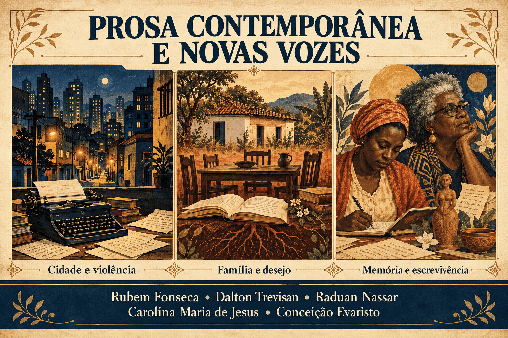

Prosa Contemporânea e Novas Vozes: Rubem Fonseca, Dalton Trevisan, Raduan Nassar, Carolina Maria de Jesus e Conceição Evaristo
A prosa contemporânea brasileira reúne projetos literários diversos, que transformaram as maneiras de narrar a vida urbana, os conflitos familiares, a desigualdade social e as experiências historicamente afastadas dos espaços de reconhecimento cultural. Nesse panorama, convivem o conto de violência e impacto, a narrativa breve construída por silêncios, o romance de linguagem intensamente poética, o diário e a ficção atravessada pela memória coletiva.
Rubem Fonseca, Dalton Trevisan, Raduan Nassar, Carolina Maria de Jesus e Conceição Evaristo permitem observar parte dessa diversidade. Suas obras investigam relações de poder, mas apresentam diferenças decisivas quanto à posição de quem narra, ao tratamento da linguagem e à representação das personagens. A violência explícita de um conto de Fonseca, por exemplo, produz efeitos distintos daqueles provocados pela repetição da fome no diário de Carolina ou pela reconstrução da ancestralidade em Evaristo.
Neste conteúdo, você encontrará contexto histórico, características literárias, análises de obras, quadro comparativo, orientações de leitura e um quiz com gabarito comentado. A abordagem relaciona os temas aos procedimentos narrativos, contribuindo para os estudos escolares e para a preparação para o ENEM, o PAES UEMA e os vestibulares.

Prosa Contemporânea e Novas Vozes em resumo
- Recorte de estudo: obras publicadas da segunda metade do século XX ao século XXI, sem uma escola literária única.
- Contextos importantes: urbanização, desigualdade, ditadura militar, transformações culturais e disputas por reconhecimento.
- Rubem Fonseca: violência urbana, brutalismo, narradores desconcertantes e aproximações com a narrativa policial.
- Dalton Trevisan: concisão, elipse, ironia e conflitos afetivos no cotidiano de Curitiba.
- Raduan Nassar: prosa poética, desejo, autoridade patriarcal e tensões familiares.
- Carolina Maria de Jesus: escrita diarística, fome, trabalho, crítica urbana e afirmação da autoria negra.
- Conceição Evaristo: escrevivência, ancestralidade, memória coletiva e subjetividade de personagens negras.
- Chave de interpretação: relacionar quem narra, como narra e quais experiências se tornam visíveis.
O que se entende por prosa contemporânea brasileira?
A expressão prosa contemporânea funciona como uma categoria ampla de organização dos estudos literários. Em materiais didáticos, costuma abranger parte da produção posterior a meados do século XX, mas suas fronteiras variam conforme o recorte adotado. Ela inclui autores de gerações diferentes e obras que não compartilham um programa estético comum.
Por isso, não é adequado tratar o período como uma sequência em que um único estilo substitui todos os anteriores. A experimentação da linguagem, a análise psicológica e a crítica social continuam presentes, assumindo novas combinações. Há narrativas lineares e fragmentadas, extensas e breves, realistas e fantásticas, centradas na metrópole ou em espaços rurais.
Os cinco autores estudados nesta página constituem um recorte desse conjunto. Eles não representam toda a literatura contemporânea brasileira, que também compreende muitas outras vozes, regiões, tradições e formas de circulação.
Atenção à expressão “novas vozes”: ela se refere, neste estudo, à ampliação da visibilidade e do reconhecimento de experiências e autorias historicamente marginalizadas. Carolina Maria de Jesus publicou Quarto de despejo em 1960. Sua importância não começa com sua valorização por leitores e instituições em décadas mais recentes.
Contexto histórico: urbanização, autoritarismo e disputas pela palavra
A modernização desigual e a experiência urbana
A expansão das cidades brasileiras intensificou deslocamentos populacionais, transformações do trabalho e contrastes entre riqueza e pobreza. A cidade tornou-se um espaço privilegiado para narrar o encontro desigual entre grupos sociais, a precariedade da moradia, o consumo, o anonimato e a violência.
Esse processo aparece sob perspectivas diferentes. Em Rubem Fonseca, a circulação entre ambientes de privilégio e exclusão frequentemente expõe relações agressivas e impessoais. Em Carolina Maria de Jesus, a cidade é observada por uma escritora que percorre suas ruas para trabalhar e enfrenta diariamente a dificuldade de obter alimento, abrigo e reconhecimento.
A ditadura militar e os limites da expressão
A ditadura militar brasileira, instaurada em 1964 e encerrada em 1985, constitui um contexto importante para parte dessa produção. Censura, repressão e controle moral interferiram na circulação de obras e no debate público. O livro Feliz ano novo, de Rubem Fonseca, publicado em 1975, teve sua circulação proibida em 1976.
A relação entre literatura e autoritarismo, entretanto, não depende apenas de referências diretas ao governo. Ela também pode ser examinada na representação da obediência, da violência, da imposição do silêncio e das relações hierárquicas. Essa aproximação exige atenção ao texto: uma família autoritária, por exemplo, não deve ser automaticamente reduzida a uma alegoria de um regime político.
Autoria, publicação e reconhecimento
Além de perguntar quais personagens aparecem nos livros, é necessário observar quem consegue escrever, publicar, circular e ser estudado. O acesso desigual à escolarização, aos recursos materiais e às redes editoriais interfere na formação do repertório reconhecido como literatura brasileira.
As trajetórias de Carolina Maria de Jesus e Conceição Evaristo permitem discutir essas condições. Suas obras também exigem leitura estética: escolhas de linguagem, organização temporal, imagens e construção de personagens são fundamentais para compreender sua força literária.
Características e procedimentos da prosa contemporânea
- Pluralidade de perspectivas: diferentes posições sociais e culturais participam da construção das narrativas.
- Problematização do narrador: a voz narrativa pode omitir, justificar, distorcer ou revelar aspectos que escapam à sua própria compreensão.
- Experimentação temporal: lembranças, antecipações e interrupções podem reorganizar a sequência dos acontecimentos.
- Diversidade de registros: convivem coloquialidade, linguagem literária elaborada, vocabulário técnico, oralidade e formas de escrita pessoal.
- Concisão e elipse: o não dito participa da produção de sentido, sobretudo nas narrativas breves.
- Interação entre experiência social e subjetividade: memória, desejo e sofrimento se relacionam às condições concretas de existência.
- Questionamento da representação: ganha importância a reflexão sobre como narrar a violência e a vida de outras pessoas.
Como estudar essas características: identifique um procedimento e explique seu efeito. Dizer que um texto possui “linguagem fragmentada” é apenas o começo. É preciso mostrar se a fragmentação produz suspense, acompanha a memória, interrompe uma certeza ou exige que o leitor reconstrua acontecimentos.
Rubem Fonseca: violência urbana, brutalismo e desconforto moral
Rubem Fonseca (1925–2020) desenvolveu uma obra marcada pela presença da violência, do crime, do corpo e das tensões da vida urbana. Sua produção inclui contos e romances como Feliz ano novo, O cobrador e A grande arte.
O termo brutalismo, empregado por Alfredo Bosi na discussão dessa vertente literária, ajuda a compreender o choque produzido por narrativas em que agressividade, degradação e relações sociais impessoais atravessam a linguagem. Não se trata simplesmente de haver cenas violentas: importa a maneira como a violência organiza a percepção do mundo.
Uma linguagem que controla o impacto
Em muitos contos, frases diretas, diálogos rápidos e descrições sem explicações sentimentais aproximam o leitor de ações extremas. A aparente frieza pode ampliar o desconforto: o narrador relata um ato brutal com uma naturalidade incompatível com sua gravidade.
A obra de Fonseca também comporta referências eruditas, reflexão sobre a escrita e estruturas de investigação. Portanto, sua linguagem não deve ser resumida a um vocabulário agressivo. A variação entre registros e o domínio da composição são partes importantes de seus efeitos.
Feliz ano novo: a celebração atravessada pela violência
No conto que dá título ao livro de 1975, um grupo de assaltantes invade uma festa em uma residência de pessoas ricas. A passagem de um ambiente de privação para outro de abundância constrói um contraste social que atravessa a narrativa.
O título mobiliza a expectativa de renovação associada à passagem de ano. A violência desorganiza essa promessa e introduz uma ironia: a celebração coletiva não elimina as fraturas da sociedade. Os objetos, os alimentos e os corpos participam de uma cena em que consumo, posse e agressão se aproximam.
A narração em primeira pessoa restringe as informações à perspectiva de um participante. Sua maneira de contar pode banalizar o horror e transformar pessoas em obstáculos ou instrumentos. Cabe ao leitor perceber a distância entre o que o narrador aceita e o que a construção do conto permite questionar.
O cobrador: a reivindicação convertida em agressão
Publicado no livro homônimo de 1979, o conto apresenta um narrador que concebe sua relação com a sociedade como uma dívida a ser cobrada. A ideia de cobrança transforma carências e frustrações em justificativas para a violência.
Uma leitura crítica precisa examinar esse movimento. A fala da personagem expõe exclusão e ressentimento, mas também procura legitimar seus atos. Compreender a lógica do narrador não significa aceitá-la como uma conclusão moral da obra.
Não confunda narrador e autor: as afirmações de uma personagem violenta não devem ser atribuídas diretamente a Rubem Fonseca. Tampouco se deve concluir que a pobreza determina o comportamento criminoso. O texto exige análise das condições sociais e das escolhas particulares de quem age e narra.
Dalton Trevisan: concisão, elipse e violência cotidiana
Dalton Trevisan (1925–2024) construiu uma obra fortemente associada a Curitiba e aos conflitos da vida comum. Entre seus livros estão Cemitério de elefantes e O vampiro de Curitiba.
A cidade de seus textos ultrapassa a função de cenário identificável. Ruas, casas e espaços de encontro formam uma rede de relações em que desejo, frustração, controle e humilhação se repetem. O cotidiano aparentemente familiar torna-se perturbador.
A economia verbal como construção literária
A concisão de Trevisan depende da seleção rigorosa das informações. Uma fala interrompida, um objeto ou uma resposta curta podem sugerir conflitos que não recebem explicação completa. A elipse transfere parte da reconstrução narrativa ao leitor.
Essa economia não torna os textos necessariamente fáceis. O leitor precisa reconhecer mudanças de voz, inferir relações e perceber o contraste entre o que as personagens dizem e o que suas atitudes revelam. A ausência de comentário explícito pode tornar a violência ainda mais incômoda.
O vampiro de Curitiba: desejo e objetificação
Publicado em 1965, o livro reúne contos associados ao universo de Nelsinho, personagem cuja relação com as mulheres é atravessada pela obsessão sexual e pelo olhar que as transforma em objetos de desejo.
A imagem do vampiro pode ser lida como figura de uma relação predatória: o outro interessa enquanto satisfaz uma necessidade do sujeito. Essa interpretação se articula ao humor corrosivo e à exposição das fantasias de poder da personagem.
A linguagem pode aproximar o leitor desse olhar sem confirmá-lo como verdade. É necessário observar as marcas de ironia e os efeitos de repetição, que revelam a estreiteza de um desejo apresentado como se fosse uma maneira suficiente de compreender o mundo.
O espaço doméstico como lugar de conflito
Em sua ficção, o ambiente íntimo pode abrigar disputas, ressentimentos e formas de coerção. Gestos rotineiros e conversas banais tornam visíveis hierarquias que dispensam grandes acontecimentos para produzir sofrimento.
Ao comparar Trevisan e Fonseca, convém evitar uma divisão rígida. Ambos investigam violência e relações de poder. Em muitos textos de Trevisan, porém, o impacto depende especialmente da compressão verbal, da repetição de impasses e daquilo que permanece sugerido.
Raduan Nassar: prosa poética, desejo e autoridade em Lavoura arcaica
Raduan Nassar, nascido em 1935, publicou Lavoura arcaica em 1975. O romance articula memória, conflitos familiares, linguagem religiosa e desejo em uma composição de grande intensidade lírica.
Narrada por André, a história acompanha sua relação com a família, sua saída de casa e seu retorno. A divisão em “A partida” e “O retorno” oferece uma estrutura geral, mas a experiência é reconstruída por lembranças e movimentos da consciência, sem se limitar à apresentação cronológica dos fatos.
O conflito entre André e a ordem paterna
O pai, Iohána, sustenta uma ordem familiar baseada no trabalho, na união e na obediência. Seus ensinamentos procuram organizar os comportamentos e apresentar a família como um conjunto que deve permanecer coeso.
André percebe essa ordem como uma força que limita seus desejos. O conflito não consiste apenas em discordar de uma regra: envolve maneiras diferentes de compreender o tempo, o corpo e o pertencimento. A espera e a disciplina valorizadas pelo pai entram em tensão com a urgência da experiência do filho.
Essa oposição também atravessa a linguagem. A fala que pretende estabilizar valores encontra uma narração carregada de imagens, repetições e oscilações afetivas. O romance transforma a disputa familiar em um conflito entre formas de dizer e organizar a vida.
O desejo por Ana e a contradição do pertencimento
A relação incestuosa entre André e sua irmã Ana é central para o conflito do romance. O desejo transgride a ordem familiar e, ao mesmo tempo, permanece voltado para seu interior. André busca escapar da autoridade, mas continua preso afetivamente à casa e aos vínculos que o constituem.
Essa contradição impede que ele seja interpretado apenas como um herói da liberdade. Seu desejo também pode envolver imposição e dificuldade de reconhecer a autonomia do outro. Como Ana não dispõe do mesmo espaço de fala do narrador, é necessário perceber os limites da perspectiva por meio da qual ela chega ao leitor.
O retorno e a inversão da reconciliação
A estrutura dialoga com a tradição do filho que abandona a casa e retorna ao convívio familiar. Em Lavoura arcaica, entretanto, o retorno não resolve os conflitos. O desfecho trágico, no qual o pai mata Ana, rompe a imagem da autoridade como garantia de equilíbrio.
O gesto final permite reler os discursos anteriores: a violência emerge do próprio espaço que se apresentava como proteção e unidade. O romance questiona a capacidade de uma ordem baseada na obediência de acolher aquilo que contraria seus fundamentos.
Por que a prosa de Nassar é considerada poética?
- Ritmo: a extensão das frases, as pausas e as repetições organizam uma cadência intensa.
- Imagens recorrentes: terra, alimento, corpo e cultivo participam da elaboração dos conflitos.
- Densidade sensorial: percepções físicas se misturam à recordação e ao desejo.
- Intertextualidade: ecos religiosos e narrativas tradicionais são retomados e tensionados.
- Tempo da memória: os acontecimentos retornam conforme sua força afetiva na narração.
Chave de leitura: o título Lavoura arcaica aproxima o cultivo da terra da transmissão de uma ordem familiar. Uma interpretação possível examina como a família procura cultivar comportamentos e preservar valores que entram em crise diante do desejo.
Carolina Maria de Jesus: diário, fome e autoria em Quarto de despejo
Carolina Maria de Jesus (1914–1977) foi uma escritora cuja produção inclui diários, poemas, narrativas e composições musicais. Nascida em Sacramento, Minas Gerais, tornou-se amplamente conhecida com Quarto de despejo: diário de uma favelada, publicado em 1960.
O livro apresenta registros de sua vida na favela do Canindé, em São Paulo, e de seu trabalho como catadora de papel. A publicação teve a mediação do jornalista Audálio Dantas, que selecionou e organizou materiais dos cadernos da autora.
A forma do diário e a repetição da necessidade
As entradas datadas organizam a narrativa em torno de dias concretos. Essa estrutura aproxima o leitor da urgência das tarefas: obter dinheiro, encontrar alimento, cuidar dos filhos e enfrentar problemas de moradia.
A repetição da fome interfere no ritmo da leitura. A necessidade retorna porque não foi resolvida, produzindo uma experiência temporal marcada pela insegurança. O futuro se apresenta frequentemente como a pergunta sobre a próxima refeição.
Isso não impede a diversidade do livro. Reflexões sobre política, observações da paisagem, conflitos de convivência e comentários sobre a escrita revelam uma narradora que interpreta seu mundo por diferentes ângulos.
A metáfora do quarto de despejo
O título relaciona a organização da cidade à organização de uma casa. Um quarto de despejo recebe aquilo que se deseja retirar dos ambientes valorizados. Aplicada à favela, a imagem evidencia uma hierarquia espacial que também é social.
A cidade depende do trabalho de pessoas que mantém em condições precárias e procura afastar de seus espaços de prestígio. A metáfora expõe esse funcionamento e transforma uma observação cotidiana em crítica da distribuição de dignidade e visibilidade.
Carolina como autora e intérprete da sociedade
A narradora não aparece somente como alguém sobre quem a pobreza atua. Ela observa decisões políticas, avalia comportamentos, constrói comparações e manifesta projetos próprios. Sua escrita produz conhecimento sobre a cidade e reivindica um lugar de autoria.
O trabalho de leitura deve considerar a força de suas imagens, os contrastes entre registros e a organização das cenas. Variações em relação à norma-padrão não anulam a elaboração literária nem autorizam uma avaliação preconceituosa da capacidade intelectual da escritora.
Os cadernos e a edição publicada
Quarto de despejo resulta de um processo editorial. A existência de seleção e organização dos registros exige distinguir os manuscritos do livro que chegou aos leitores.
Estudar essa mediação permite investigar quais aspectos da produção de Carolina ganharam destaque. Também ajuda a compreender por que sua obra precisa ser lida para além de uma imagem limitada à pobreza e ao diário.
Evite reduzir Carolina a um documento social: a relevância histórica de seus registros convive com sua condição de criação literária. Também é inadequado apresentar a publicação como o momento em que alguém lhe concedeu uma voz: Carolina já escrevia e desenvolvia seus projetos antes do reconhecimento editorial.
Conceição Evaristo: escrevivência, memória e ancestralidade
Conceição Evaristo, nascida em 1946, desenvolve uma obra em que experiências negras, especialmente as de mulheres, participam da construção de romances, contos e poemas. Entre seus livros estão Ponciá Vicêncio, Becos da memória e Olhos d’água.
Suas personagens possuem desejos, vínculos afetivos, lembranças e maneiras próprias de interpretar a existência. O racismo e a desigualdade interferem em suas trajetórias, mas a composição literária também destaca cuidado, criatividade, solidariedade e reconstrução de pertencimentos.
O que significa escrevivência?
O conceito de escrevivência, formulado por Conceição Evaristo, relaciona escrita, experiência vivida e memória coletiva. Sua elaboração se vincula à história de pessoas negras e à afirmação de sujeitos cujas experiências foram frequentemente silenciadas ou narradas por outros.
A dimensão coletiva é essencial: uma experiência individual pode se relacionar a histórias de famílias, comunidades e gerações. Ao ser trabalhada literariamente, ela ultrapassa o relato de uma trajetória particular.
Escrevivência não significa que todos os acontecimentos de uma obra ocorreram com sua autora. A invenção, a composição das personagens e a organização da linguagem participam desse processo. A aproximação entre vida e literatura não elimina a diferença entre autora, narrador e personagem.
Ponciá Vicêncio: deslocamento e permanência do passado
Publicado em 2003, o romance acompanha Ponciá em sua relação com a família, o trabalho, a migração e a memória. A saída do espaço de origem não garante a transformação esperada: a experiência urbana é atravessada por precariedade, perdas e solidão.
A narrativa aproxima diferentes momentos da vida da protagonista e de seus familiares. O passado não aparece como uma etapa encerrada. Suas marcas atravessam o presente e interferem na maneira como as personagens reconhecem a si mesmas.
O sobrenome e a herança da escravidão
O sobrenome Vicêncio remete à permanência simbólica das relações de domínio na história familiar. Nomear, nesse contexto, não é uma operação neutra: o nome pode carregar a memória de uma posse imposta.
Essa dimensão ajuda a compreender como o romance relaciona identidade e história. A liberdade jurídica não elimina automaticamente desigualdades, vínculos de dependência e marcas da escravidão na vida das gerações seguintes.
O barro como trabalho, criação e memória
A modelagem do barro participa das relações familiares e da experiência criadora de Ponciá. O trabalho com a matéria aproxima gesto, lembrança e transmissão de saberes.
O objeto produzido pode funcionar como suporte de uma memória que não depende somente da explicação verbal. O fazer artístico adquire importância na reconstrução dos vínculos da protagonista com sua história.
Narração e tempo não linear
Embora o romance seja narrado em terceira pessoa, a narrativa acompanha de perto percepções e lembranças das personagens. A circulação entre tempos e perspectivas amplia a história de Ponciá, relacionando sua experiência a um percurso familiar.
Essa organização exige que o leitor reconstrua conexões. A fragmentação possui uma função: tornar sensível a presença de um passado que retorna e participa da elaboração da identidade.
Olhos d’água: afeto e memória na narrativa breve
No conto que dá título ao livro de 2014, uma narradora tenta recordar a cor dos olhos da mãe. Essa pergunta mobiliza lembranças da infância, da pobreza e dos cuidados maternos.
A procura por uma característica física se amplia em uma investigação afetiva. A memória da mãe envolve gestos de proteção e experiências compartilhadas, fazendo com que o olhar participe da relação entre gerações.
Carolina e Conceição em diálogo: a escrita de ambas permite discutir autoria negra, memória e desigualdade. Entretanto, Quarto de despejo é uma edição de registros diarísticos, enquanto Ponciá Vicêncio é um romance. Aproximar suas questões não significa apagar suas diferenças de gênero e composição.
Quadro comparativo dos autores
| Autor | Questões centrais | Procedimentos de destaque | Cuidado na interpretação |
|---|---|---|---|
| Rubem Fonseca | Violência, crime, consumo e desigualdade urbana. | Impacto verbal, contraste de registros e narradores que podem justificar os próprios atos. | Não transformar a fala do narrador em opinião direta do autor. |
| Dalton Trevisan | Desejo, humilhação e conflitos cotidianos. | Concisão, elipse, diálogo e ironia. | Não confundir brevidade com simplicidade de sentido. |
| Raduan Nassar | Autoridade familiar, pertencimento e desejo. | Prosa poética, imagens recorrentes e memória em primeira pessoa. | Considerar os limites e as contradições da perspectiva de André. |
| Carolina Maria de Jesus | Fome, trabalho, cidade e reconhecimento da autoria. | Entradas datadas, metáforas e observação crítica do cotidiano. | Reconhecer a elaboração literária e a mediação editorial. |
| Conceição Evaristo | Memória coletiva, ancestralidade, racismo e afetos. | Escrevivência, linguagem lírica e articulação entre diferentes tempos. | Não reduzir a ficção a uma transcrição autobiográfica. |
Obras fundamentais e datas de publicação
| Ano | Obra | Autoria | Gênero |
|---|---|---|---|
| 1960 | Quarto de despejo: diário de uma favelada | Carolina Maria de Jesus | Diário |
| 1964 | Cemitério de elefantes | Dalton Trevisan | Contos |
| 1965 | O vampiro de Curitiba | Dalton Trevisan | Contos |
| 1975 | Feliz ano novo | Rubem Fonseca | Contos |
| 1975 | Lavoura arcaica | Raduan Nassar | Romance |
| 1978 | Um copo de cólera | Raduan Nassar | Novela |
| 1979 | O cobrador | Rubem Fonseca | Contos |
| 2003 | Ponciá Vicêncio | Conceição Evaristo | Romance |
| 2006 | Becos da memória | Conceição Evaristo | Romance |
| 2014 | Olhos d’água | Conceição Evaristo | Contos |
Como comparar as diferentes formas de violência?
Uma comparação produtiva começa pela identificação de sua forma concreta. A violência pode aparecer como agressão física, imposição de autoridade, privação de direitos, humilhação ou apagamento de uma história.
- Em Fonseca: o ato violento pode chegar ao leitor por uma voz que o apresenta como rotina ou cobrança.
- Em Trevisan: gestos e diálogos breves podem revelar coerção e desumanização nas relações íntimas.
- Em Nassar: o conflito familiar coloca em crise a autoridade que afirma proteger e ordenar.
- Em Carolina: a repetição da fome e da precariedade evidencia uma violência social que organiza o cotidiano.
- Em Evaristo: perdas e desigualdades se relacionam à memória histórica e às possibilidades de reconstrução dos vínculos.
Depois de reconhecer a situação, observe sua composição. A narração aproxima o leitor de quem sofre? Permite ouvir quem agride? Interrompe explicações? Apresenta consequências? Essas escolhas definem como a experiência será percebida.
Importância e legado dessa produção
A leitura desses autores amplia o repertório de formas narrativas e de experiências representadas. Seus textos permitem compreender que a crítica social pode ser construída pela organização do tempo, pela escolha de uma voz, pelo ritmo das frases ou por uma imagem recorrente.
Também colocam em discussão o acesso à autoria e à memória. O reconhecimento de obras como as de Carolina Maria de Jesus e Conceição Evaristo participa da revisão de critérios pelos quais determinados sujeitos foram valorizados como produtores de literatura.
Esse legado envolve a capacidade de construir experiências de leitura complexas. Desconforto, identificação, estranhamento e dúvida fazem parte de uma relação com o texto que não se resolve pela identificação de uma mensagem única.
Como estudar o tema para o ENEM, o PAES UEMA e os vestibulares
Na leitura de um fragmento literário, informações históricas e biográficas ajudam a contextualizar a obra. A resposta, porém, precisa ser sustentada pelos recursos presentes no trecho.
- Identifique a voz narrativa: observe se participa dos acontecimentos e quais informações pode conhecer.
- Examine o ponto de vista: pergunte como a posição do narrador influencia a representação das outras personagens.
- Observe a linguagem: selecione marcas de concisão, repetição, coloquialidade, ritmo, imagem ou ironia.
- Reconstrua o tempo: diferencie o momento de narrar dos acontecimentos recordados.
- Relacione forma e questão social: explique como uma escolha de composição interfere na percepção do conflito.
- Compare as alternativas: desconfie de interpretações que eliminam ambiguidades ou generalizam um traço para toda a obra.
Exemplo de resposta analítica: em vez de afirmar apenas que Quarto de despejo denuncia a pobreza, explique que a recorrência da busca por comida nas entradas datadas torna perceptível uma rotina sem segurança alimentar. A observação relaciona o tema à forma do diário.
Erros comuns sobre a Prosa Contemporânea e Novas Vozes
- Tratar o conjunto como uma escola homogênea: os autores apresentam projetos literários distintos.
- Associar contemporaneidade apenas à data recente: o recorte didático pode incluir obras publicadas há décadas.
- Confundir representação e aprovação da violência: a presença de um ato no texto não determina sua avaliação moral.
- Usar brutalismo como sinônimo de qualquer narrativa violenta: o conceito envolve procedimentos e uma discussão crítica específica.
- Reduzir Trevisan a um retrato pitoresco de Curitiba: sua composição investiga relações humanas atravessadas por conflito.
- Ler André como uma voz inteiramente transparente: sua posição de narrador exige atenção a interesses e contradições.
- Avaliar Carolina somente pela norma-padrão: esse procedimento ignora imagens, escolhas narrativas e força expressiva.
- Identificar escrevivência com autobiografia literal: o conceito inclui elaboração estética e uma dimensão coletiva.
- Reduzir personagens negras ao sofrimento: suas experiências também envolvem criação, desejo, afeto e ação.
Quiz sobre Prosa Contemporânea e Novas Vozes
Questões de interpretação — nível avançado
Questão 1 — Em um conto, o narrador descreve seus próprios atos violentos com naturalidade e apresenta justificativas para eles. Considerando a discussão sobre Rubem Fonseca, qual procedimento de leitura é mais adequado?
Questão 2 — Uma narrativa breve apresenta diálogos interrompidos, poucas descrições e um conflito que precisa ser parcialmente reconstruído pelo leitor. Em relação à concisão associada a Dalton Trevisan, esses recursos indicam:
Questão 3 — Em Lavoura arcaica, André rompe com a ordem paterna, mas seu desejo permanece ligado ao espaço familiar. Essa tensão permite compreender o protagonista como:
Questão 4 — A busca por alimento reaparece em diferentes entradas de Quarto de despejo. Qual interpretação relaciona adequadamente esse aspecto à forma do diário?
Questão 5 — Uma análise afirma que a escrevivência aproxima experiência, memória coletiva e criação literária. Em consequência, a leitura de Ponciá Vicêncio deve:
Questão 6 — Ao comparar os cinco autores estudados, um estudante identifica violência, desigualdade e relações de poder em diferentes obras. Para aprofundar a comparação, ele deve:
Resumo final: o que você precisa lembrar
- A prosa contemporânea é plural: não corresponde a uma escola literária de características obrigatórias.
- Rubem Fonseca: a violência urbana exige atenção à linguagem e à posição moral dos narradores.
- Dalton Trevisan: concisão, ironia e elipse tornam o cotidiano um espaço de conflito.
- Raduan Nassar: a linguagem poética participa das tensões entre autoridade, desejo e pertencimento.
- Carolina Maria de Jesus: o diário transforma experiência, observação e trabalho de escrita em crítica social.
- Conceição Evaristo: a escrevivência articula invenção, memória coletiva e experiências negras.
- Na interpretação: explique como os procedimentos narrativos constroem os temas.
Perguntas frequentes sobre Prosa Contemporânea e Novas Vozes
1. A prosa contemporânea brasileira é uma escola literária?
Não. A expressão abrange projetos diversos e seus limites variam conforme o recorte de estudo. Não existe um manifesto ou um conjunto de procedimentos seguido por todos os autores.
2. O que caracteriza o brutalismo associado a Rubem Fonseca?
O conceito ajuda a discutir narrativas em que violência, agressividade e relações sociais degradadas atravessam a construção da linguagem. Sua aplicação exige observar a composição do texto, e não apenas a presença de um crime.
3. Por que os contos de Dalton Trevisan exigem atenção ao não dito?
A concisão e a elipse deixam relações e acontecimentos parcialmente sugeridos. O leitor precisa reconstruí-los a partir de falas, gestos, interrupções e marcas de ironia.
4. Qual é o conflito central de Lavoura arcaica?
O romance articula a autoridade patriarcal, os desejos de André e sua relação contraditória com a família. O conflito envolve obediência, transgressão, pertencimento e os limites da perspectiva do narrador.
5. Quarto de despejo é um romance?
A obra é uma edição de registros diarísticos de Carolina Maria de Jesus. Seu vínculo com a experiência da autora convive com a elaboração da linguagem e com um processo de seleção e organização editorial.
6. O que significa escrevivência?
É um conceito formulado por Conceição Evaristo que relaciona criação literária, experiência e memória coletiva, especialmente no contexto das vivências negras. Não corresponde à transcrição literal da biografia da autora.
7. Como o passado aparece em Ponciá Vicêncio?
O passado retorna por lembranças, vínculos familiares, marcas históricas e práticas como o trabalho com o barro. A organização temporal mostra que essas experiências continuam atuando no presente.
8. Carolina Maria de Jesus e Conceição Evaristo escrevem do mesmo modo?
Não. Embora suas obras permitam aproximações sobre memória, desigualdade e autoria negra, elas apresentam gêneros e procedimentos próprios. O diário de Carolina e o romance de Evaristo estabelecem relações diferentes entre experiência, voz narrativa e invenção.
Conteúdos relacionados
- Realismo no Brasil: contexto, características e autores
- Segunda Geração Modernista: prosa e poesia de 1930
- Graciliano Ramos: biografia, obras e análise de Infância
- Clarice Lispector: vida, obras e características literárias
- Guimarães Rosa: vida, obras e o sertão universal
- Lima Barreto: biografia, obras e crítica social
Conclusão
Rubem Fonseca, Dalton Trevisan, Raduan Nassar, Carolina Maria de Jesus e Conceição Evaristo oferecem perspectivas distintas sobre a vida brasileira. Suas obras investigam relações de poder por meio de vozes, ritmos e formas narrativas que interferem diretamente na experiência do leitor.
Para compreender essa diversidade, é necessário acompanhar tanto os conflitos representados quanto sua elaboração literária. A atenção ao narrador, ao tempo, às imagens e ao gênero permite reconhecer como cada obra constrói uma maneira própria de perceber a cidade, a família, a memória e o pertencimento.
Referências
- EVARISTO, Conceição. Ponciá Vicêncio. Primeira publicação: 2003.
- EVARISTO, Conceição. Becos da memória. Primeira publicação: 2006.
- EVARISTO, Conceição. Olhos d’água. Primeira publicação: 2014.
- FONSECA, Rubem. Feliz ano novo. Primeira publicação: 1975.
- FONSECA, Rubem. O cobrador. Primeira publicação: 1979.
- JESUS, Carolina Maria de. Quarto de despejo: diário de uma favelada. Primeira publicação: 1960.
- NASSAR, Raduan. Lavoura arcaica. Primeira publicação: 1975.
- TREVISAN, Dalton. O vampiro de Curitiba. Primeira publicação: 1965.
- COMPANHIA DAS LETRAS. Raduan Nassar: perfil do autor .
- INSTITUTO MOREIRA SALLES. Sobre Carolina Maria de Jesus .
- INSTITUTO MOREIRA SALLES. Dalton Trevisan entre amigos .
- ITAÚ CULTURAL. Ocupação Conceição Evaristo: Escrevivência .
- ITAÚ CULTURAL. Cinco obras fundamentais para mergulhar na literatura de Rubem Fonseca .
- NOVA FRONTEIRA. Feliz ano novo: apresentação editorial .
- PERPÉTUA, Elzira Divina. Aquém do Quarto de despejo: a palavra de Carolina Maria de Jesus nos manuscritos de seu diário . Estudos de Literatura Brasileira Contemporânea.
- DUARTE, Constância Lima; NUNES, Isabella Rosado (org.). Escrevivência: a escrita de nós — reflexões sobre a obra de Conceição Evaristo .
Explore Outros Conteúdos
Continue seus estudos acessando outras seções do site Mestre Kira: